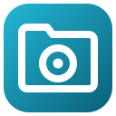

Focus Desk support
Save tab sessions, sleep idle tabs, set tab volume, restore window layouts, block distracting sites and take breaks.
The 6 tools
- Sessions: Save windows and tabs as named sessions, with automatic crash snapshots and closed windows kept. Free: 5 saved sessions, the latest snapshot and the one from before the browser closed, the last 5 closed windows, lazy restore, search. Pro: unlimited sessions, the last 48 snapshots, tab groups restored, export and import (JSON, bookmarks file, OneTab, Tab Session Manager), merge and remove duplicates.
- Sleep tabs: Put tabs you haven’t used in a while to sleep with Chrome’s own discarding, to free memory. Free: one timer, a never-sleep list of 5 sites, sleep other tabs now, the count on the button. Pro: per-site timers, an unlimited never-sleep list, other windows only, shortcuts, pause for an hour, the list of sleeping tabs with one-click wake.
- Tab volume: Set the tab’s volume from 0% to 400%, with a limiter so boosted sound stays clean. Free: the tab you’re on, 0–200%, mute, quick levels, limiter. Pro: up to 400%, Bass and Voice EQ, remembered levels per site, every playing tab in one list, shortcuts.
- Window layouts: Snap the window to halves, and save your windows as layouts to restore on the right monitors. Free: 2 saved layouts, halves and maximize, the other display, snap shortcuts, backup export and import. Pro: unlimited layouts, thirds, quarters and your own grid, the layout for the monitors you plug in, a shortcut per layout.
- Block sites: Block distracting sites during a focus session or on a schedule; getting through early takes a typed sentence and a wait. Free: one block list, focus sessions, the calm blocked page with your goal, the typed way through, short breaks from blocking. Pro: several lists, allow-lists, weekly schedules, part-of-site patterns, focus stats, import and export.
- Breaks: Break reminders that count only the time you really use the computer, with guided stretches and eye rest. Free: one interval, Eye rest or Desk reset, snooze and skip, today’s count, held during focus sessions. Pro: custom routines, three more routines, work hours, quiet times, long and short breaks, streaks and a 7-day chart, more sounds, a shortcut.
Install
Add it from your browser's store (the Chrome Web Store, or Microsoft Edge Add-ons and Firefox Add-ons where it's listed), then pin it. In Chrome or Edge: click the puzzle-piece (Extensions) icon in the toolbar and the pin next to Focus Desk. In Firefox: click the Extensions button and choose “Pin to Toolbar”.
Pro
- Buy: open Focus Desk's settings (right-click its icon → Options) and click Buy Pro. It's $19 once, not a subscription.
- One key, every tool: Pro unlocks all 6 tools at once; every tool also has a free version.
- Activate: paste the license key from your purchase email into the settings and click Activate. Chrome asks once to let Focus Desk reach the license server.
- Another computer: a key works on up to 3 of your browsers. Entering it again on a browser where it was already activated doesn't use another one. Need a 4th? Email help@fitztoppicks.com with your Gumroad receipt and we'll free a place.
- Lost your key: search your email for "Gumroad", or find the purchase in your Gumroad library (gumroad.com/library) if you have a Gumroad account.
- Refunds: within 14 days of buying, email help@fitztoppicks.com with your order number.
Something not working?
Email help@fitztoppicks.com with what you tried, the page you were on (if you're comfortable sharing it) and your Chrome version (chrome://version).